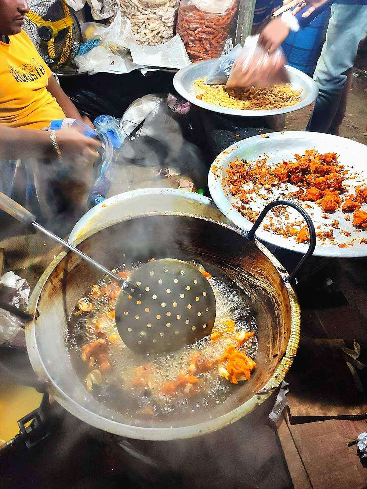

Prep15 min
Cook20 min
Active35 min
Plus15 min resting
Serves4
Difficultyeasy
Contains: mustard
Checked against the ingredient list for ten allergens: milk, egg, fish, crustaceans, tree nuts, peanuts, sesame, mustard, soy and gluten. Brands vary, so read the label on anything new to you.
Ingredients
Quantities for 4.
- 4 medium (about 400g), sliced as thin as you can Onion
- 6 tbsp Besan
- 2 tbsp Rice Flourthis is what makes them stay crisp
- 1 tsp Nigella
- 3, finely chopped Green Chilli
- 1/2 tsp Turmeric
- 1/2 tsp Chilli Powderoptional
- a pinch Baking Sodaoptional, for a lighter fritteroptional
- 2 tbsp, chopped Coriander Leavesoptional
- 500ml, for deep frying Mustard Oil
- 1 tsp Salt
Cookware
stovetop, kadhai
Before you start
- Slice the onions along the grain into long thin strips. Rings fall apart in the oil.
- Salt the sliced onions and leave 15 minutes; they will release enough water that you need almost none extra.
- Mix the batter only 2 minutes before frying, or the onions weep and it turns soupy.
Method
- Squeeze the salted onions lightly with your hands to bring out their water, keeping the liquid in the bowl.That onion water is your only liquid. Do not throw it away and do not add tap water.
- Add the besan, rice flour, nigella, green chilli, turmeric, chilli powder and coriander leaves and mix with your fingers.
- The mixture should just cling together in a ragged clump. Add 1 tsp water at a time only if it is genuinely dry.A loose batter gives you a pancake instead of a fritter. Err on the dry side.
- Heat the mustard oil in a kadhai until it smokes, then bring it down to a steady 170C.
- Drop in irregular clumps the size of a walnut, six or seven at a time.Craggy shapes fry crisper than neat balls. Do not pat them smooth.
- Fry 4-5 minutes, turning once at the halfway point, until deep amber and no longer bubbling hard.The bubbling slowing down tells you the moisture has cooked out and they will be crisp.
- Lift onto a wire rack, not paper, so the undersides stay crisp.
- Fry the next batch, letting the oil come back up to temperature between batches, and serve hot with rice and dal or on their own with mustard.
Storage
Best within 30 minutes of frying. Leftovers can be re-crisped in a hot oven for 5 minutes but never in a microwave.
Nutrition Good estimate
Low protein: 7 g a serving, 9% of the calories
| Per serving161 g | Per 100 g | |
|---|---|---|
| Calories | 314 kcal | 195 kcal |
| Protein | 7.0 g | 4 g |
| Carbohydrate | 29.6 g | 18 g |
| of which sugars | 7.0 g | 4 g |
| Fibre | 4.9 g | 3 g |
| Fat | 19.1 g | 12 g |
| of which saturated | 2.2 g | 1 g |
| of which unsaturated | 15.1 g | 9 g |
Estimated from raw ingredients using USDA FoodData Central.
Times, yields, allergens and nutrition are guidance. Use your own judgement on doneness and on storing. More in About.